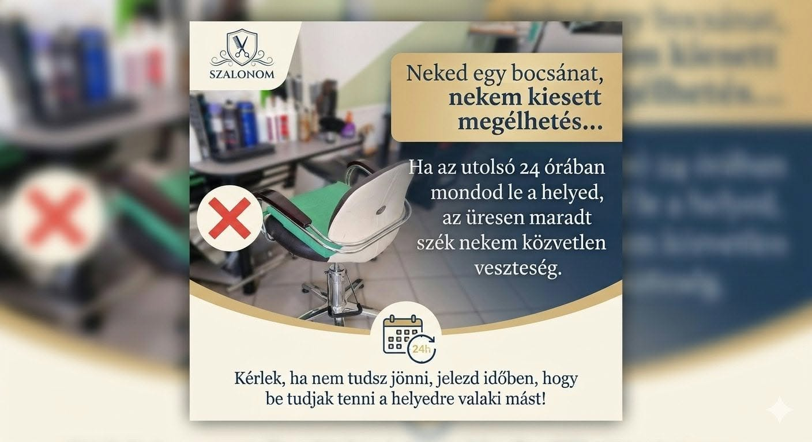

Várunk szeretettel
Kapcsolat
Lőcsei Szalon
1147 Budapest, Lőcsei utca 43.
1997 óta.
Fontos kérés vendégeinkhez
Kérjük, foglalj felelősséggel időpontot!
Kedves Vendégeink! Kérünk benneteket, hogy csak olyan időpontot foglaljatok, amelyen valóban meg tudtok jelenni. Ha mégsem tudtok eljönni, kérjük, időben jelezzétek, hogy a felszabaduló időpontot más vendégnek adhassuk.
Köszönjük, hogy tiszteletben tartjátok munkánkat és egymás idejét!

Fontos tudnivalók
Bejelentkezés és házirend
Bejelentkezés
Kérjük, érkezés előtt egyeztess időpontot, mert a szalonban nem mindig tartózkodik személyzet.
Lemondás
A megbeszélt időpontot kérjük legalább 48 órával korábban lemondani. 48 órán belüli lemondás esetén a következő alkalommal az elmaradt szolgáltatás teljes összege felszámításra kerül.
Nyitvatartás
Bejelentkezés, időpontfoglalás szerint.
Szombaton, vasárnap és ünnepnapokon zárva tartunk.
Megközelítés
Bosnyák tér felől: 7, 7E, 173, 173E, 124, 125 és 277 busz. Nagy Lajos király útja felől: 32-es busz, valamint 3, 62 és 62A villamos.
Találj ide könnyen
Térkép és útvonaltervezés
1147 Budapest, Lőcsei utca 43.